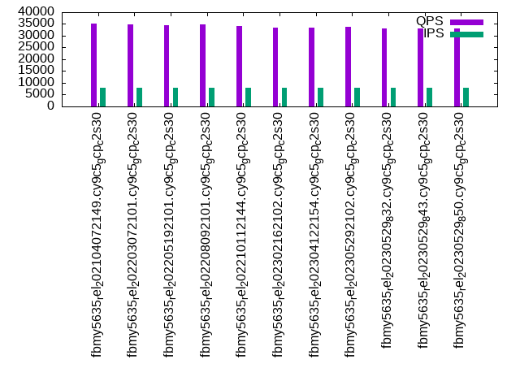

Introduction
This is a report for the insert benchmark with 160M docs and 8 client(s). It is generated by scripts (bash, awk, sed) and Tufte might not be impressed. An overview of the insert benchmark is here and a short update is here. Below, by DBMS, I mean DBMS+version.config. An example is my8020.c10b40 where my means MySQL, 8020 is version 8.0.20 and c10b40 is the name for the configuration file.
The test server is a c2-standard-30 from GCP with 15 cores, hyperthreads disabled, 120G RAM, XFS + SW RAID 0 on 4 NVMe devices (1.5TB). The benchmark was run with 8 client and there were 1 or 3 connections per client (1 for queries or inserts without rate limits, 1+1 for rate limited inserts+deletes). There are 8 tables, client per table. It loads 20M rows per table without secondary indexes, creates secondary indexes, then inserts 200M rows with a delete per insert to avoid growing the table. It then does 3 read+write tests for 3600s each that do queries as fast as possible with 100, 500 and then 1000 inserts/second/client concurrent with the queries and 1000 deletes/second to avoid growing the table. The database is cached by MyRocks and the only IO is for writes.
The tested DBMS are:
- fbmy5635_rel_202104072149.cy9c5_gcp_c2s30 - MyRocks and FB MySQL 5.6.35 from 20210407 and git hash (f896415f MySQL, 0f8c041e RocksDB), RocksDB 6.19.0, cy9c5_gcp_c2s30 config
- fbmy5635_rel_202203072101.cy9c5_gcp_c2s30 - MyRocks and FB MySQL 5.6.35 from 20220307 and git hash (e7d976ee MySQL, df4d3cf6 RocksDB), RocksDB 6.28.2, cy9c5_gcp_c2s30 config
- fbmy5635_rel_202205192101.cy9c5_gcp_c2s30 - MyRocks and FB MySQL 5.6.35 from 20220519 and git hash (d503bd77 MySQL, f2f26b15 RocksDB), RocksDB 7.2.2, cy9c5_gcp_c2s30 config
- fbmy5635_rel_202208092101.cy9c5_gcp_c2s30 - MyRocks and FB MySQL 5.6.35 from 20220809 and git hash (877a0e58 MySQL, 8e0f4952 RocksDB), RocksDB 7.3.1, cy9c5_gcp_c2s30 config
- fbmy5635_rel_202210112144.cy9c5_gcp_c2s30 - MyRocks and FB MySQL 5.6.35 from 20221011 and git hash (c691c716 MySQL, 8e0f4952 RocksDB), RocksDB 7.3.1, cy9c5_gcp_c2s30 config
- fbmy5635_rel_202302162102.cy9c5_gcp_c2s30 - MyRocks and FB MySQL 5.6.35 from 20230216 and git hash (21a2b0aa MySQL, e5dcebf7 RocksDB), RocksDB 7.10.0, cy9c5_gcp_c2s30 config
- fbmy5635_rel_202304122154.cy9c5_gcp_c2s30 - MyRocks and FB MySQL 5.6.35 from 20230412 and git hash (205c31dd MySQL, 3258b5c3 RocksDB), RocksDB 7.10.2, cy9c5_gcp_c2s30 config
- fbmy5635_rel_202305292102.cy9c5_gcp_c2s30 - MyRocks and FB MySQL 5.6.35 from 20230529 and git hash (b739eac1 MySQL, 03057204 RocksDB), RocksDB 8.2.1, cy9c5_gcp_c2s30 config
- fbmy5635_rel_20230529_832.cy9c5_gcp_c2s30 - MyRocks and FB MySQL 5.6.35 from 20230529 and git hash (b739eac1 MySQL) but RocksDB 8.3.2, y9c5_gcp_c2s30 config
- fbmy5635_rel_20230529_843.cy9c5_gcp_c2s30 - MyRocks and FB MySQL 5.6.35 from 20230529 and git hash (b739eac1 MySQL) but RocksDB 8.4.3, y9c5_gcp_c2s30 config
- fbmy5635_rel_20230529_850.cy9c5_gcp_c2s30 - MyRocks and FB MySQL 5.6.35 from 20230529 and git hash (b739eac1 MySQL) but RocksDB 8.5.0, y9c5_gcp_c2s30 config
Contents
- Summary
- l.i0: load without secondary indexes
- l.x: create secondary indexes
- l.i1: continue load after secondary indexes created
- q100.1: range queries with 100 insert/s per client
- q500.1: range queries with 500 insert/s per client
- q1000.1: range queries with 1000 insert/s per client
Summary
The numbers are inserts/s for l.i0 and l.i1, indexed docs (or rows) /s for l.x and queries/s for q*.2. The values are the average rate over the entire test for inserts (IPS) and queries (QPS). The range of values for IPS and QPS is split into 3 parts: bottom 25%, middle 50%, top 25%. Values in the bottom 25% have a red background, values in the top 25% have a green background and values in the middle have no color. A gray background is used for values that can be ignored because the DBMS did not sustain the target insert rate. Red backgrounds are not used when the minimum value is within 80% of the max value.
| dbms | l.i0 | l.x | l.i1 | q100.1 | q500.1 | q1000.1 |
|---|---|---|---|---|---|---|
| fbmy5635_rel_202104072149.cy9c5_gcp_c2s30 | 617761 | 727727 | 89797 | 37380 | 36374 | 35236 |
| fbmy5635_rel_202203072101.cy9c5_gcp_c2s30 | 608365 | 737788 | 88334 | 37141 | 36160 | 34858 |
| fbmy5635_rel_202205192101.cy9c5_gcp_c2s30 | 608365 | 737788 | 87303 | 36405 | 35587 | 34424 |
| fbmy5635_rel_202208092101.cy9c5_gcp_c2s30 | 599251 | 741204 | 87117 | 36816 | 35738 | 34686 |
| fbmy5635_rel_202210112144.cy9c5_gcp_c2s30 | 606061 | 748131 | 87734 | 36481 | 35436 | 34240 |
| fbmy5635_rel_202302162102.cy9c5_gcp_c2s30 | 645161 | 714732 | 86221 | 36164 | 34741 | 33346 |
| fbmy5635_rel_202304122154.cy9c5_gcp_c2s30 | 642570 | 721171 | 86575 | 36418 | 35049 | 33421 |
| fbmy5635_rel_202305292102.cy9c5_gcp_c2s30 | 634921 | 714732 | 86290 | 36291 | 35221 | 33780 |
| fbmy5635_rel_20230529_832.cy9c5_gcp_c2s30 | 650406 | 724434 | 88466 | 35674 | 34647 | 33012 |
| fbmy5635_rel_20230529_843.cy9c5_gcp_c2s30 | 637450 | 731050 | 89087 | 35591 | 34506 | 33003 |
| fbmy5635_rel_20230529_850.cy9c5_gcp_c2s30 | 642570 | 724434 | 89963 | 35548 | 34484 | 32960 |
This table has relative throughput, throughput for the DBMS relative to the DBMS in the first line, using the absolute throughput from the previous table. Values less than 0.95 have a yellow background. Values greater than 1.05 have a blue background.
| dbms | l.i0 | l.x | l.i1 | q100.1 | q500.1 | q1000.1 |
|---|---|---|---|---|---|---|
| fbmy5635_rel_202104072149.cy9c5_gcp_c2s30 | 1.00 | 1.00 | 1.00 | 1.00 | 1.00 | 1.00 |
| fbmy5635_rel_202203072101.cy9c5_gcp_c2s30 | 0.98 | 1.01 | 0.98 | 0.99 | 0.99 | 0.99 |
| fbmy5635_rel_202205192101.cy9c5_gcp_c2s30 | 0.98 | 1.01 | 0.97 | 0.97 | 0.98 | 0.98 |
| fbmy5635_rel_202208092101.cy9c5_gcp_c2s30 | 0.97 | 1.02 | 0.97 | 0.98 | 0.98 | 0.98 |
| fbmy5635_rel_202210112144.cy9c5_gcp_c2s30 | 0.98 | 1.03 | 0.98 | 0.98 | 0.97 | 0.97 |
| fbmy5635_rel_202302162102.cy9c5_gcp_c2s30 | 1.04 | 0.98 | 0.96 | 0.97 | 0.96 | 0.95 |
| fbmy5635_rel_202304122154.cy9c5_gcp_c2s30 | 1.04 | 0.99 | 0.96 | 0.97 | 0.96 | 0.95 |
| fbmy5635_rel_202305292102.cy9c5_gcp_c2s30 | 1.03 | 0.98 | 0.96 | 0.97 | 0.97 | 0.96 |
| fbmy5635_rel_20230529_832.cy9c5_gcp_c2s30 | 1.05 | 1.00 | 0.99 | 0.95 | 0.95 | 0.94 |
| fbmy5635_rel_20230529_843.cy9c5_gcp_c2s30 | 1.03 | 1.00 | 0.99 | 0.95 | 0.95 | 0.94 |
| fbmy5635_rel_20230529_850.cy9c5_gcp_c2s30 | 1.04 | 1.00 | 1.00 | 0.95 | 0.95 | 0.94 |
This lists the average rate of inserts/s for the tests that do inserts concurrent with queries. For such tests the query rate is listed in the table above. The read+write tests are setup so that the insert rate should match the target rate every second. Cells that are not at least 95% of the target have a red background to indicate a failure to satisfy the target.
| dbms | q100.1 | q500.1 | q1000.1 |
|---|---|---|---|
| fbmy5635_rel_202104072149.cy9c5_gcp_c2s30 | 797 | 3987 | 7973 |
| fbmy5635_rel_202203072101.cy9c5_gcp_c2s30 | 797 | 3988 | 7973 |
| fbmy5635_rel_202205192101.cy9c5_gcp_c2s30 | 797 | 3987 | 7973 |
| fbmy5635_rel_202208092101.cy9c5_gcp_c2s30 | 797 | 3987 | 7973 |
| fbmy5635_rel_202210112144.cy9c5_gcp_c2s30 | 798 | 3987 | 7973 |
| fbmy5635_rel_202302162102.cy9c5_gcp_c2s30 | 797 | 3987 | 7976 |
| fbmy5635_rel_202304122154.cy9c5_gcp_c2s30 | 796 | 3984 | 7971 |
| fbmy5635_rel_202305292102.cy9c5_gcp_c2s30 | 796 | 3987 | 7976 |
| fbmy5635_rel_20230529_832.cy9c5_gcp_c2s30 | 797 | 3987 | 7973 |
| fbmy5635_rel_20230529_843.cy9c5_gcp_c2s30 | 797 | 3986 | 7976 |
| fbmy5635_rel_20230529_850.cy9c5_gcp_c2s30 | 797 | 3987 | 7976 |
| target | 800 | 4000 | 8000 |
l.i0
l.i0: load without secondary indexes. Graphs for performance per 1-second interval are here.
Average throughput:
Insert response time histogram: each cell has the percentage of responses that take <= the time in the header and max is the max response time in seconds. For the max column values in the top 25% of the range have a red background and in the bottom 25% of the range have a green background. The red background is not used when the min value is within 80% of the max value.
| dbms | 256us | 1ms | 4ms | 16ms | 64ms | 256ms | 1s | 4s | 16s | gt | max |
|---|---|---|---|---|---|---|---|---|---|---|---|
| fbmy5635_rel_202104072149.cy9c5_gcp_c2s30 | 27.499 | 72.472 | 0.013 | 0.002 | 0.013 | 0.001 | 0.305 | ||||
| fbmy5635_rel_202203072101.cy9c5_gcp_c2s30 | 21.041 | 78.926 | 0.017 | 0.001 | 0.013 | 0.001 | 0.307 | ||||
| fbmy5635_rel_202205192101.cy9c5_gcp_c2s30 | 20.326 | 79.645 | 0.015 | 0.001 | 0.014 | 0.250 | |||||
| fbmy5635_rel_202208092101.cy9c5_gcp_c2s30 | 17.507 | 82.461 | 0.015 | 0.003 | 0.012 | 0.002 | 0.354 | ||||
| fbmy5635_rel_202210112144.cy9c5_gcp_c2s30 | 18.836 | 81.134 | 0.014 | 0.002 | 0.012 | 0.002 | 0.367 | ||||
| fbmy5635_rel_202302162102.cy9c5_gcp_c2s30 | 40.170 | 59.799 | 0.015 | 0.002 | 0.014 | 0.248 | |||||
| fbmy5635_rel_202304122154.cy9c5_gcp_c2s30 | 40.405 | 59.566 | 0.014 | 0.002 | 0.014 | 0.251 | |||||
| fbmy5635_rel_202305292102.cy9c5_gcp_c2s30 | 33.094 | 66.879 | 0.012 | 0.001 | 0.013 | 0.001 | 0.290 | ||||
| fbmy5635_rel_20230529_832.cy9c5_gcp_c2s30 | 40.626 | 59.345 | 0.014 | 0.002 | 0.013 | 0.001 | 0.360 | ||||
| fbmy5635_rel_20230529_843.cy9c5_gcp_c2s30 | 29.846 | 70.129 | 0.009 | 0.002 | 0.013 | 0.001 | 0.268 | ||||
| fbmy5635_rel_20230529_850.cy9c5_gcp_c2s30 | 35.894 | 64.077 | 0.014 | 0.001 | 0.013 | 0.001 | 0.314 |
Performance metrics for the DBMS listed above. Some are normalized by throughput, others are not. Legend for results is here.
ips qps rps rmbps wps wmbps rpq rkbpq wpi wkbpi csps cpups cspq cpupq dbgb1 dbgb2 rss maxop p50 p99 tag 617761 0 0 0.0 628.9 185.1 0.000 0.000 0.001 0.307 76723 73.4 0.124 18 5.2 6.9 NA 0.305 82110 61331 160m.fbmy5635_rel_202104072149.cy9c5_gcp_c2s30 608365 0 0 0.0 636.1 182.0 0.000 0.000 0.001 0.306 74130 73.4 0.122 18 5.2 6.7 NA 0.307 81450 56039 160m.fbmy5635_rel_202203072101.cy9c5_gcp_c2s30 608365 0 0 0.0 637.4 182.9 0.000 0.000 0.001 0.308 72413 73.6 0.119 18 5.4 6.9 NA 0.250 81809 57537 160m.fbmy5635_rel_202205192101.cy9c5_gcp_c2s30 599251 0 0 0.0 629.1 178.3 0.000 0.000 0.001 0.305 71771 73.2 0.120 18 5.4 6.9 NA 0.354 80611 53362 160m.fbmy5635_rel_202208092101.cy9c5_gcp_c2s30 606061 0 0 0.0 643.4 180.2 0.000 0.000 0.001 0.304 72261 73.7 0.119 18 5.4 6.9 NA 0.367 81211 54341 160m.fbmy5635_rel_202210112144.cy9c5_gcp_c2s30 645161 0 0 0.0 547.5 147.6 0.000 0.000 0.001 0.234 74260 72.8 0.115 17 5.0 6.5 NA 0.248 87106 66228 160m.fbmy5635_rel_202302162102.cy9c5_gcp_c2s30 642570 0 0 0.0 562.5 150.6 0.000 0.000 0.001 0.240 74268 73.1 0.116 17 5.1 6.6 NA 0.251 88104 62232 160m.fbmy5635_rel_202304122154.cy9c5_gcp_c2s30 634921 0 0 0.0 542.3 144.7 0.000 0.000 0.001 0.233 72536 73.0 0.114 17 5.1 6.6 NA 0.290 86406 59734 160m.fbmy5635_rel_202305292102.cy9c5_gcp_c2s30 650406 0 0 0.0 547.1 156.0 0.000 0.000 0.001 0.246 73400 73.0 0.113 17 5.1 6.6 NA 0.360 88103 58935 160m.fbmy5635_rel_20230529_832.cy9c5_gcp_c2s30 637450 0 0 0.0 519.6 150.9 0.000 0.000 0.001 0.242 72966 72.7 0.114 17 5.1 6.6 NA 0.268 84907 60534 160m.fbmy5635_rel_20230529_843.cy9c5_gcp_c2s30 642570 0 0 0.0 539.4 154.0 0.000 0.000 0.001 0.245 73732 73.0 0.115 17 5.1 6.6 NA 0.314 87005 58037 160m.fbmy5635_rel_20230529_850.cy9c5_gcp_c2s30
l.x
l.x: create secondary indexes.
Average throughput:

Performance metrics for the DBMS listed above. Some are normalized by throughput, others are not. Legend for results is here.
ips qps rps rmbps wps wmbps rpq rkbpq wpi wkbpi csps cpups cspq cpupq dbgb1 dbgb2 rss maxop p50 p99 tag 727727 0 1 0.1 279.7 98.1 0.000 0.000 0.000 0.138 1020 49.0 0.001 10 10.9 12.5 NA 0.002 NA NA 160m.fbmy5635_rel_202104072149.cy9c5_gcp_c2s30 737788 0 1 0.1 291.3 101.4 0.000 0.000 0.000 0.141 1105 49.0 0.001 10 10.8 12.3 NA 0.002 NA NA 160m.fbmy5635_rel_202203072101.cy9c5_gcp_c2s30 737788 0 1 0.1 295.0 102.7 0.000 0.000 0.000 0.142 995 49.3 0.001 10 10.9 12.4 NA 0.002 NA NA 160m.fbmy5635_rel_202205192101.cy9c5_gcp_c2s30 741204 0 1 0.1 298.7 103.3 0.000 0.000 0.000 0.143 1007 49.2 0.001 10 10.8 12.3 NA 0.002 NA NA 160m.fbmy5635_rel_202208092101.cy9c5_gcp_c2s30 748131 0 1 0.1 301.0 104.9 0.000 0.000 0.000 0.144 1134 49.6 0.002 10 10.9 12.4 NA 0.002 NA NA 160m.fbmy5635_rel_202210112144.cy9c5_gcp_c2s30 714732 0 1 0.1 267.6 95.5 0.000 0.000 0.000 0.137 1093 49.0 0.002 10 10.8 12.3 NA 0.002 NA NA 160m.fbmy5635_rel_202302162102.cy9c5_gcp_c2s30 721171 0 1 0.1 270.5 96.4 0.000 0.000 0.000 0.137 1054 48.6 0.001 10 10.8 12.3 NA 0.002 NA NA 160m.fbmy5635_rel_202304122154.cy9c5_gcp_c2s30 714732 0 1 0.1 268.4 97.1 0.000 0.000 0.000 0.139 1032 49.1 0.001 10 10.9 12.4 NA 0.002 NA NA 160m.fbmy5635_rel_202305292102.cy9c5_gcp_c2s30 724434 0 1 0.1 267.2 95.5 0.000 0.000 0.000 0.135 1094 48.8 0.002 10 10.9 12.4 NA 0.002 NA NA 160m.fbmy5635_rel_20230529_832.cy9c5_gcp_c2s30 731050 0 1 0.1 265.1 95.8 0.000 0.000 0.000 0.134 1067 48.5 0.001 10 10.9 12.4 NA 0.003 NA NA 160m.fbmy5635_rel_20230529_843.cy9c5_gcp_c2s30 724434 0 1 0.1 266.2 95.6 0.000 0.000 0.000 0.135 1031 48.6 0.001 10 10.8 12.3 NA 0.002 NA NA 160m.fbmy5635_rel_20230529_850.cy9c5_gcp_c2s30
l.i1
l.i1: continue load after secondary indexes created. Graphs for performance per 1-second interval are here.
Average throughput:
Insert response time histogram: each cell has the percentage of responses that take <= the time in the header and max is the max response time in seconds. For the max column values in the top 25% of the range have a red background and in the bottom 25% of the range have a green background. The red background is not used when the min value is within 80% of the max value.
| dbms | 256us | 1ms | 4ms | 16ms | 64ms | 256ms | 1s | 4s | 16s | gt | max |
|---|---|---|---|---|---|---|---|---|---|---|---|
| fbmy5635_rel_202104072149.cy9c5_gcp_c2s30 | 0.036 | 35.862 | 64.011 | 0.075 | 0.013 | 0.001 | 0.403 | ||||
| fbmy5635_rel_202203072101.cy9c5_gcp_c2s30 | 0.019 | 30.727 | 69.163 | 0.076 | 0.014 | 0.001 | 0.465 | ||||
| fbmy5635_rel_202205192101.cy9c5_gcp_c2s30 | 0.010 | 29.117 | 70.782 | 0.077 | 0.013 | 0.001 | 0.357 | ||||
| fbmy5635_rel_202208092101.cy9c5_gcp_c2s30 | 0.011 | 28.511 | 71.389 | 0.075 | 0.014 | 0.001 | 0.440 | ||||
| fbmy5635_rel_202210112144.cy9c5_gcp_c2s30 | 0.008 | 29.680 | 70.223 | 0.075 | 0.013 | 0.001 | 0.403 | ||||
| fbmy5635_rel_202302162102.cy9c5_gcp_c2s30 | 0.023 | 30.062 | 69.812 | 0.090 | 0.012 | 0.001 | 0.423 | ||||
| fbmy5635_rel_202304122154.cy9c5_gcp_c2s30 | 0.031 | 29.638 | 70.225 | 0.092 | 0.014 | 0.001 | 0.352 | ||||
| fbmy5635_rel_202305292102.cy9c5_gcp_c2s30 | 0.022 | 29.642 | 70.229 | 0.095 | 0.011 | 0.001 | 0.386 | ||||
| fbmy5635_rel_20230529_832.cy9c5_gcp_c2s30 | 0.019 | 33.844 | 66.029 | 0.094 | 0.013 | 0.001 | 0.383 | ||||
| fbmy5635_rel_20230529_843.cy9c5_gcp_c2s30 | 0.038 | 34.971 | 64.884 | 0.092 | 0.014 | 0.001 | 0.436 | ||||
| fbmy5635_rel_20230529_850.cy9c5_gcp_c2s30 | 0.026 | 36.650 | 63.220 | 0.089 | 0.013 | 0.001 | 0.430 |
Delete response time histogram: each cell has the percentage of responses that take <= the time in the header and max is the max response time in seconds. For the max column values in the top 25% of the range have a red background and in the bottom 25% of the range have a green background. The red background is not used when the min value is within 80% of the max value.
| dbms | 256us | 1ms | 4ms | 16ms | 64ms | 256ms | 1s | 4s | 16s | gt | max |
|---|---|---|---|---|---|---|---|---|---|---|---|
| fbmy5635_rel_202104072149.cy9c5_gcp_c2s30 | 0.035 | 33.022 | 66.847 | 0.080 | 0.014 | 0.001 | 0.403 | ||||
| fbmy5635_rel_202203072101.cy9c5_gcp_c2s30 | 0.019 | 31.725 | 68.163 | 0.078 | 0.014 | 0.001 | 0.463 | ||||
| fbmy5635_rel_202205192101.cy9c5_gcp_c2s30 | 0.009 | 29.919 | 69.977 | 0.079 | 0.013 | 0.001 | 0.359 | ||||
| fbmy5635_rel_202208092101.cy9c5_gcp_c2s30 | 0.011 | 29.834 | 70.064 | 0.077 | 0.013 | 0.001 | 0.440 | ||||
| fbmy5635_rel_202210112144.cy9c5_gcp_c2s30 | 0.007 | 30.838 | 69.063 | 0.077 | 0.013 | 0.001 | 0.402 | ||||
| fbmy5635_rel_202302162102.cy9c5_gcp_c2s30 | 0.019 | 28.790 | 71.084 | 0.094 | 0.013 | 0.001 | 0.425 | ||||
| fbmy5635_rel_202304122154.cy9c5_gcp_c2s30 | 0.030 | 29.585 | 70.276 | 0.094 | 0.014 | 0.001 | 0.353 | ||||
| fbmy5635_rel_202305292102.cy9c5_gcp_c2s30 | 0.022 | 29.858 | 70.011 | 0.096 | 0.011 | 0.001 | 0.387 | ||||
| fbmy5635_rel_20230529_832.cy9c5_gcp_c2s30 | 0.015 | 32.979 | 66.894 | 0.097 | 0.014 | 0.001 | 0.383 | ||||
| fbmy5635_rel_20230529_843.cy9c5_gcp_c2s30 | 0.036 | 34.147 | 65.707 | 0.094 | 0.014 | 0.001 | 0.434 | ||||
| fbmy5635_rel_20230529_850.cy9c5_gcp_c2s30 | 0.024 | 36.115 | 63.755 | 0.091 | 0.014 | 0.001 | 0.428 |
Performance metrics for the DBMS listed above. Some are normalized by throughput, others are not. Legend for results is here.
ips qps rps rmbps wps wmbps rpq rkbpq wpi wkbpi csps cpups cspq cpupq dbgb1 dbgb2 rss maxop p50 p99 tag 89797 0 1 0.3 612.8 128.6 0.000 0.004 0.007 1.467 65814 54.8 0.733 92 13.0 13.1 NA 0.403 11392 8391 160m.fbmy5635_rel_202104072149.cy9c5_gcp_c2s30 88334 0 1 0.3 603.0 128.5 0.000 0.004 0.007 1.490 65178 54.6 0.738 93 14.7 14.8 NA 0.465 11238 8341 160m.fbmy5635_rel_202203072101.cy9c5_gcp_c2s30 87303 0 1 0.3 596.6 126.6 0.000 0.004 0.007 1.485 64492 54.6 0.739 94 14.6 14.7 NA 0.357 11088 8141 160m.fbmy5635_rel_202205192101.cy9c5_gcp_c2s30 87117 0 1 0.3 596.5 125.1 0.000 0.004 0.007 1.471 64355 54.7 0.739 94 13.3 13.4 NA 0.440 11087 8145 160m.fbmy5635_rel_202208092101.cy9c5_gcp_c2s30 87734 0 1 0.3 603.5 123.9 0.000 0.004 0.007 1.446 64461 54.8 0.735 94 15.1 15.2 NA 0.403 11138 8191 160m.fbmy5635_rel_202210112144.cy9c5_gcp_c2s30 86221 0 3 0.3 545.5 128.1 0.000 0.004 0.006 1.521 58691 57.3 0.681 100 13.7 13.9 NA 0.423 10991 7991 160m.fbmy5635_rel_202302162102.cy9c5_gcp_c2s30 86575 0 3 0.4 552.4 126.7 0.000 0.004 0.006 1.499 58678 57.5 0.678 100 13.6 13.8 NA 0.352 11038 7991 160m.fbmy5635_rel_202304122154.cy9c5_gcp_c2s30 86290 0 1 0.3 543.1 125.4 0.000 0.004 0.006 1.488 57989 58.5 0.672 102 15.8 16.0 NA 0.386 10988 7991 160m.fbmy5635_rel_202305292102.cy9c5_gcp_c2s30 88466 0 2 0.3 557.8 127.3 0.000 0.004 0.006 1.474 59056 59.4 0.668 101 15.8 16.0 NA 0.383 11288 8291 160m.fbmy5635_rel_20230529_832.cy9c5_gcp_c2s30 89087 0 1 0.3 558.3 125.9 0.000 0.004 0.006 1.447 59099 60.3 0.663 102 13.3 13.5 NA 0.436 11337 8291 160m.fbmy5635_rel_20230529_843.cy9c5_gcp_c2s30 89963 0 96 0.5 569.6 128.5 0.001 0.005 0.006 1.463 60155 59.7 0.669 100 13.7 13.9 NA 0.430 11442 8388 160m.fbmy5635_rel_20230529_850.cy9c5_gcp_c2s30
q100.1
q100.1: range queries with 100 insert/s per client. Graphs for performance per 1-second interval are here.
Average throughput:
Query response time histogram: each cell has the percentage of responses that take <= the time in the header and max is the max response time in seconds. For max values in the top 25% of the range have a red background and in the bottom 25% of the range have a green background. The red background is not used when the min value is within 80% of the max value.
| dbms | 256us | 1ms | 4ms | 16ms | 64ms | 256ms | 1s | 4s | 16s | gt | max |
|---|---|---|---|---|---|---|---|---|---|---|---|
| fbmy5635_rel_202104072149.cy9c5_gcp_c2s30 | 98.182 | 1.817 | 0.001 | nonzero | nonzero | 0.029 | |||||
| fbmy5635_rel_202203072101.cy9c5_gcp_c2s30 | 98.117 | 1.882 | 0.001 | nonzero | nonzero | 0.026 | |||||
| fbmy5635_rel_202205192101.cy9c5_gcp_c2s30 | 97.284 | 2.715 | 0.001 | nonzero | nonzero | 0.026 | |||||
| fbmy5635_rel_202208092101.cy9c5_gcp_c2s30 | 97.626 | 2.373 | 0.001 | nonzero | nonzero | 0.025 | |||||
| fbmy5635_rel_202210112144.cy9c5_gcp_c2s30 | 97.296 | 2.703 | 0.001 | nonzero | 0.005 | ||||||
| fbmy5635_rel_202302162102.cy9c5_gcp_c2s30 | 96.539 | 3.460 | 0.001 | nonzero | nonzero | 0.029 | |||||
| fbmy5635_rel_202304122154.cy9c5_gcp_c2s30 | 97.200 | 2.799 | 0.001 | nonzero | 0.011 | ||||||
| fbmy5635_rel_202305292102.cy9c5_gcp_c2s30 | 96.658 | 3.341 | 0.001 | nonzero | nonzero | 0.022 | |||||
| fbmy5635_rel_20230529_832.cy9c5_gcp_c2s30 | 95.805 | 4.194 | 0.001 | nonzero | nonzero | 0.017 | |||||
| fbmy5635_rel_20230529_843.cy9c5_gcp_c2s30 | 95.963 | 4.036 | 0.001 | nonzero | nonzero | 0.036 | |||||
| fbmy5635_rel_20230529_850.cy9c5_gcp_c2s30 | 95.696 | 4.303 | 0.001 | nonzero | nonzero | 0.019 |
Insert response time histogram: each cell has the percentage of responses that take <= the time in the header and max is the max response time in seconds. For max values in the top 25% of the range have a red background and in the bottom 25% of the range have a green background. The red background is not used when the min value is within 80% of the max value.
| dbms | 256us | 1ms | 4ms | 16ms | 64ms | 256ms | 1s | 4s | 16s | gt | max |
|---|---|---|---|---|---|---|---|---|---|---|---|
| fbmy5635_rel_202104072149.cy9c5_gcp_c2s30 | 3.844 | 96.116 | 0.036 | 0.003 | 0.026 | ||||||
| fbmy5635_rel_202203072101.cy9c5_gcp_c2s30 | 1.465 | 98.519 | 0.012 | 0.003 | 0.021 | ||||||
| fbmy5635_rel_202205192101.cy9c5_gcp_c2s30 | 0.861 | 99.109 | 0.028 | 0.002 | 0.017 | ||||||
| fbmy5635_rel_202208092101.cy9c5_gcp_c2s30 | 0.469 | 99.476 | 0.049 | 0.007 | 0.020 | ||||||
| fbmy5635_rel_202210112144.cy9c5_gcp_c2s30 | 0.259 | 99.705 | 0.033 | 0.003 | 0.023 | ||||||
| fbmy5635_rel_202302162102.cy9c5_gcp_c2s30 | 10.693 | 89.288 | 0.016 | 0.003 | 0.050 | ||||||
| fbmy5635_rel_202304122154.cy9c5_gcp_c2s30 | 4.151 | 95.795 | 0.043 | 0.010 | 0.034 | ||||||
| fbmy5635_rel_202305292102.cy9c5_gcp_c2s30 | 1.819 | 98.118 | 0.056 | 0.007 | 0.034 | ||||||
| fbmy5635_rel_20230529_832.cy9c5_gcp_c2s30 | 6.948 | 93.016 | 0.035 | 0.002 | 0.021 | ||||||
| fbmy5635_rel_20230529_843.cy9c5_gcp_c2s30 | 4.306 | 95.627 | 0.059 | 0.009 | 0.036 | ||||||
| fbmy5635_rel_20230529_850.cy9c5_gcp_c2s30 | 7.278 | 92.698 | 0.023 | 0.002 | 0.018 |
Delete response time histogram: each cell has the percentage of responses that take <= the time in the header and max is the max response time in seconds. For max values in the top 25% of the range have a red background and in the bottom 25% of the range have a green background. The red background is not used when the min value is within 80% of the max value.
| dbms | 256us | 1ms | 4ms | 16ms | 64ms | 256ms | 1s | 4s | 16s | gt | max |
|---|---|---|---|---|---|---|---|---|---|---|---|
| fbmy5635_rel_202104072149.cy9c5_gcp_c2s30 | 1.717 | 98.224 | 0.057 | 0.002 | 0.027 | ||||||
| fbmy5635_rel_202203072101.cy9c5_gcp_c2s30 | 2.370 | 97.568 | 0.054 | 0.009 | 0.021 | ||||||
| fbmy5635_rel_202205192101.cy9c5_gcp_c2s30 | 1.339 | 98.630 | 0.030 | 0.002 | 0.017 | ||||||
| fbmy5635_rel_202208092101.cy9c5_gcp_c2s30 | 0.613 | 99.333 | 0.047 | 0.007 | 0.022 | ||||||
| fbmy5635_rel_202210112144.cy9c5_gcp_c2s30 | 0.682 | 99.247 | 0.066 | 0.005 | 0.022 | ||||||
| fbmy5635_rel_202302162102.cy9c5_gcp_c2s30 | 3.257 | 96.694 | 0.045 | 0.003 | 0.049 | ||||||
| fbmy5635_rel_202304122154.cy9c5_gcp_c2s30 | 3.969 | 95.932 | 0.090 | 0.009 | 0.030 | ||||||
| fbmy5635_rel_202305292102.cy9c5_gcp_c2s30 | 3.408 | 96.498 | 0.089 | 0.005 | 0.034 | ||||||
| fbmy5635_rel_20230529_832.cy9c5_gcp_c2s30 | 4.205 | 95.724 | 0.066 | 0.005 | 0.025 | ||||||
| fbmy5635_rel_20230529_843.cy9c5_gcp_c2s30 | 3.271 | 96.608 | 0.108 | 0.014 | 0.037 | ||||||
| fbmy5635_rel_20230529_850.cy9c5_gcp_c2s30 | 4.823 | 95.106 | 0.062 | 0.009 | 0.038 |
Performance metrics for the DBMS listed above. Some are normalized by throughput, others are not. Legend for results is here.
ips qps rps rmbps wps wmbps rpq rkbpq wpi wkbpi csps cpups cspq cpupq dbgb1 dbgb2 rss maxop p50 p99 tag 797 37380 0 0.0 13.1 1.3 0.000 0.000 0.016 1.722 146825 53.3 3.928 214 12.3 12.9 NA 0.029 4715 4219 160m.fbmy5635_rel_202104072149.cy9c5_gcp_c2s30 797 37141 0 0.0 13.3 1.3 0.000 0.000 0.017 1.643 145570 53.4 3.919 216 12.0 12.7 NA 0.026 4619 4237 160m.fbmy5635_rel_202203072101.cy9c5_gcp_c2s30 797 36405 0 0.0 14.2 1.4 0.000 0.000 0.018 1.844 142926 53.4 3.926 220 12.1 12.8 NA 0.026 4520 4125 160m.fbmy5635_rel_202205192101.cy9c5_gcp_c2s30 797 36816 0 0.0 15.8 1.4 0.000 0.000 0.020 1.787 144366 53.4 3.921 218 12.3 13.0 NA 0.025 4603 4045 160m.fbmy5635_rel_202208092101.cy9c5_gcp_c2s30 798 36481 0 0.0 15.9 1.5 0.000 0.000 0.020 1.864 143052 53.4 3.921 220 12.3 13.0 NA 0.005 4555 4123 160m.fbmy5635_rel_202210112144.cy9c5_gcp_c2s30 797 36164 1 0.2 11.4 1.1 0.000 0.006 0.014 1.406 140911 53.3 3.896 221 13.1 13.9 NA 0.029 4509 3932 160m.fbmy5635_rel_202302162102.cy9c5_gcp_c2s30 796 36418 2 0.3 11.6 1.1 0.000 0.008 0.015 1.422 141683 53.2 3.890 219 13.0 13.8 NA 0.011 4603 4123 160m.fbmy5635_rel_202304122154.cy9c5_gcp_c2s30 796 36291 2 0.2 12.3 1.2 0.000 0.007 0.015 1.565 141557 53.4 3.901 221 13.0 13.8 NA 0.022 4539 3996 160m.fbmy5635_rel_202305292102.cy9c5_gcp_c2s30 797 35674 2 0.2 12.0 1.3 0.000 0.007 0.015 1.623 139008 53.3 3.897 224 13.0 13.8 NA 0.017 4541 3788 160m.fbmy5635_rel_20230529_832.cy9c5_gcp_c2s30 797 35591 1 0.2 10.4 1.0 0.000 0.005 0.013 1.339 138613 53.2 3.895 224 12.8 13.6 NA 0.036 4443 3884 160m.fbmy5635_rel_20230529_843.cy9c5_gcp_c2s30 797 35548 2 0.2 11.7 1.2 0.000 0.006 0.015 1.479 138422 53.4 3.894 225 13.0 13.8 NA 0.019 4443 3772 160m.fbmy5635_rel_20230529_850.cy9c5_gcp_c2s30
q500.1
q500.1: range queries with 500 insert/s per client. Graphs for performance per 1-second interval are here.
Average throughput:
Query response time histogram: each cell has the percentage of responses that take <= the time in the header and max is the max response time in seconds. For max values in the top 25% of the range have a red background and in the bottom 25% of the range have a green background. The red background is not used when the min value is within 80% of the max value.
| dbms | 256us | 1ms | 4ms | 16ms | 64ms | 256ms | 1s | 4s | 16s | gt | max |
|---|---|---|---|---|---|---|---|---|---|---|---|
| fbmy5635_rel_202104072149.cy9c5_gcp_c2s30 | 96.015 | 3.983 | 0.003 | nonzero | nonzero | 0.031 | |||||
| fbmy5635_rel_202203072101.cy9c5_gcp_c2s30 | 95.645 | 4.353 | 0.003 | nonzero | nonzero | nonzero | 0.144 | ||||
| fbmy5635_rel_202205192101.cy9c5_gcp_c2s30 | 94.390 | 5.606 | 0.004 | nonzero | nonzero | 0.039 | |||||
| fbmy5635_rel_202208092101.cy9c5_gcp_c2s30 | 95.109 | 4.888 | 0.003 | nonzero | nonzero | 0.033 | |||||
| fbmy5635_rel_202210112144.cy9c5_gcp_c2s30 | 94.317 | 5.680 | 0.003 | nonzero | 0.014 | ||||||
| fbmy5635_rel_202302162102.cy9c5_gcp_c2s30 | 90.782 | 9.213 | 0.005 | nonzero | nonzero | 0.028 | |||||
| fbmy5635_rel_202304122154.cy9c5_gcp_c2s30 | 91.963 | 8.031 | 0.005 | nonzero | nonzero | 0.016 | |||||
| fbmy5635_rel_202305292102.cy9c5_gcp_c2s30 | 92.085 | 7.910 | 0.005 | nonzero | 0.015 | ||||||
| fbmy5635_rel_20230529_832.cy9c5_gcp_c2s30 | 90.717 | 9.277 | 0.006 | nonzero | nonzero | 0.036 | |||||
| fbmy5635_rel_20230529_843.cy9c5_gcp_c2s30 | 90.776 | 9.219 | 0.005 | nonzero | nonzero | 0.038 | |||||
| fbmy5635_rel_20230529_850.cy9c5_gcp_c2s30 | 90.826 | 9.169 | 0.005 | nonzero | nonzero | 0.039 |
Insert response time histogram: each cell has the percentage of responses that take <= the time in the header and max is the max response time in seconds. For max values in the top 25% of the range have a red background and in the bottom 25% of the range have a green background. The red background is not used when the min value is within 80% of the max value.
| dbms | 256us | 1ms | 4ms | 16ms | 64ms | 256ms | 1s | 4s | 16s | gt | max |
|---|---|---|---|---|---|---|---|---|---|---|---|
| fbmy5635_rel_202104072149.cy9c5_gcp_c2s30 | 15.577 | 84.403 | 0.020 | nonzero | 0.025 | ||||||
| fbmy5635_rel_202203072101.cy9c5_gcp_c2s30 | 7.126 | 92.851 | 0.022 | 0.001 | 0.025 | ||||||
| fbmy5635_rel_202205192101.cy9c5_gcp_c2s30 | 3.125 | 96.253 | 0.619 | 0.002 | 0.020 | ||||||
| fbmy5635_rel_202208092101.cy9c5_gcp_c2s30 | 2.920 | 97.039 | 0.039 | 0.002 | 0.032 | ||||||
| fbmy5635_rel_202210112144.cy9c5_gcp_c2s30 | 1.995 | 97.952 | 0.052 | 0.001 | 0.038 | ||||||
| fbmy5635_rel_202302162102.cy9c5_gcp_c2s30 | 8.670 | 90.858 | 0.466 | 0.005 | 0.001 | 0.096 | |||||
| fbmy5635_rel_202304122154.cy9c5_gcp_c2s30 | 5.327 | 92.500 | 2.166 | 0.007 | 0.024 | ||||||
| fbmy5635_rel_202305292102.cy9c5_gcp_c2s30 | 4.248 | 95.185 | 0.562 | 0.004 | 0.022 | ||||||
| fbmy5635_rel_20230529_832.cy9c5_gcp_c2s30 | 7.502 | 89.288 | 3.205 | 0.004 | 0.024 | ||||||
| fbmy5635_rel_20230529_843.cy9c5_gcp_c2s30 | 5.697 | 93.964 | 0.336 | 0.003 | 0.043 | ||||||
| fbmy5635_rel_20230529_850.cy9c5_gcp_c2s30 | 12.534 | 87.297 | 0.167 | 0.002 | 0.023 |
Delete response time histogram: each cell has the percentage of responses that take <= the time in the header and max is the max response time in seconds. For max values in the top 25% of the range have a red background and in the bottom 25% of the range have a green background. The red background is not used when the min value is within 80% of the max value.
| dbms | 256us | 1ms | 4ms | 16ms | 64ms | 256ms | 1s | 4s | 16s | gt | max |
|---|---|---|---|---|---|---|---|---|---|---|---|
| fbmy5635_rel_202104072149.cy9c5_gcp_c2s30 | 11.636 | 88.306 | 0.055 | 0.003 | 0.040 | ||||||
| fbmy5635_rel_202203072101.cy9c5_gcp_c2s30 | 7.197 | 92.716 | 0.083 | 0.003 | nonzero | 0.064 | |||||
| fbmy5635_rel_202205192101.cy9c5_gcp_c2s30 | 3.827 | 95.514 | 0.654 | 0.005 | 0.052 | ||||||
| fbmy5635_rel_202208092101.cy9c5_gcp_c2s30 | 5.030 | 94.906 | 0.060 | 0.003 | 0.047 | ||||||
| fbmy5635_rel_202210112144.cy9c5_gcp_c2s30 | 3.653 | 96.270 | 0.073 | 0.003 | 0.038 | ||||||
| fbmy5635_rel_202302162102.cy9c5_gcp_c2s30 | 7.607 | 91.930 | 0.455 | 0.007 | 0.001 | 0.096 | |||||
| fbmy5635_rel_202304122154.cy9c5_gcp_c2s30 | 8.991 | 88.949 | 2.050 | 0.009 | 0.049 | ||||||
| fbmy5635_rel_202305292102.cy9c5_gcp_c2s30 | 7.709 | 91.748 | 0.538 | 0.006 | 0.027 | ||||||
| fbmy5635_rel_20230529_832.cy9c5_gcp_c2s30 | 9.909 | 87.017 | 3.067 | 0.006 | 0.025 | ||||||
| fbmy5635_rel_20230529_843.cy9c5_gcp_c2s30 | 10.974 | 88.697 | 0.327 | 0.002 | 0.043 | ||||||
| fbmy5635_rel_20230529_850.cy9c5_gcp_c2s30 | 14.556 | 85.235 | 0.203 | 0.006 | 0.027 |
Performance metrics for the DBMS listed above. Some are normalized by throughput, others are not. Legend for results is here.
ips qps rps rmbps wps wmbps rpq rkbpq wpi wkbpi csps cpups cspq cpupq dbgb1 dbgb2 rss maxop p50 p99 tag 3987 36374 0 0.0 38.9 6.0 0.000 0.000 0.010 1.541 144177 55.3 3.964 228 12.3 14.0 NA 0.031 4557 3964 160m.fbmy5635_rel_202104072149.cy9c5_gcp_c2s30 3988 36160 0 0.0 37.7 6.3 0.000 0.000 0.009 1.625 143230 55.3 3.961 229 12.1 13.9 NA 0.144 4541 3948 160m.fbmy5635_rel_202203072101.cy9c5_gcp_c2s30 3987 35587 0 0.0 39.4 6.1 0.000 0.000 0.010 1.570 141119 55.4 3.965 234 12.2 14.0 NA 0.039 4477 3900 160m.fbmy5635_rel_202205192101.cy9c5_gcp_c2s30 3987 35738 0 0.0 39.7 6.3 0.000 0.000 0.010 1.626 141869 55.4 3.970 233 12.2 14.0 NA 0.033 4507 3901 160m.fbmy5635_rel_202208092101.cy9c5_gcp_c2s30 3987 35436 0 0.0 40.2 6.1 0.000 0.000 0.010 1.558 140744 55.3 3.972 234 12.3 14.1 NA 0.014 4443 3868 160m.fbmy5635_rel_202210112144.cy9c5_gcp_c2s30 3987 34741 0 0.0 36.4 5.5 0.000 0.000 0.009 1.401 136408 55.5 3.926 240 13.3 15.1 NA 0.028 4379 3676 160m.fbmy5635_rel_202302162102.cy9c5_gcp_c2s30 3984 35049 0 0.0 36.9 5.7 0.000 0.000 0.009 1.457 137597 55.6 3.926 238 13.3 15.1 NA 0.016 4397 3676 160m.fbmy5635_rel_202304122154.cy9c5_gcp_c2s30 3987 35221 0 0.0 36.0 5.7 0.000 0.000 0.009 1.457 138275 55.7 3.926 237 13.1 14.9 NA 0.015 4443 3740 160m.fbmy5635_rel_202305292102.cy9c5_gcp_c2s30 3987 34647 0 0.0 36.5 5.5 0.000 0.000 0.009 1.409 135873 55.6 3.922 241 13.1 15.0 NA 0.036 4379 3757 160m.fbmy5635_rel_20230529_832.cy9c5_gcp_c2s30 3986 34506 0 0.0 35.3 5.4 0.000 0.000 0.009 1.386 135218 55.5 3.919 241 12.9 14.8 NA 0.038 4317 3628 160m.fbmy5635_rel_20230529_843.cy9c5_gcp_c2s30 3987 34484 0 0.0 35.5 5.4 0.000 0.000 0.009 1.382 135094 55.5 3.918 241 13.2 15.0 NA 0.039 4331 3724 160m.fbmy5635_rel_20230529_850.cy9c5_gcp_c2s30
q1000.1
q1000.1: range queries with 1000 insert/s per client. Graphs for performance per 1-second interval are here.
Average throughput:
Query response time histogram: each cell has the percentage of responses that take <= the time in the header and max is the max response time in seconds. For max values in the top 25% of the range have a red background and in the bottom 25% of the range have a green background. The red background is not used when the min value is within 80% of the max value.
| dbms | 256us | 1ms | 4ms | 16ms | 64ms | 256ms | 1s | 4s | 16s | gt | max |
|---|---|---|---|---|---|---|---|---|---|---|---|
| fbmy5635_rel_202104072149.cy9c5_gcp_c2s30 | 90.818 | 9.175 | 0.006 | nonzero | nonzero | 0.045 | |||||
| fbmy5635_rel_202203072101.cy9c5_gcp_c2s30 | 90.099 | 9.895 | 0.006 | nonzero | nonzero | 0.043 | |||||
| fbmy5635_rel_202205192101.cy9c5_gcp_c2s30 | 88.874 | 11.119 | 0.006 | nonzero | nonzero | 0.044 | |||||
| fbmy5635_rel_202208092101.cy9c5_gcp_c2s30 | 89.515 | 10.478 | 0.006 | nonzero | nonzero | 0.049 | |||||
| fbmy5635_rel_202210112144.cy9c5_gcp_c2s30 | 88.280 | 11.713 | 0.006 | nonzero | nonzero | 0.043 | |||||
| fbmy5635_rel_202302162102.cy9c5_gcp_c2s30 | 82.361 | 17.619 | 0.020 | nonzero | nonzero | 0.048 | |||||
| fbmy5635_rel_202304122154.cy9c5_gcp_c2s30 | 82.803 | 17.176 | 0.020 | nonzero | nonzero | 0.043 | |||||
| fbmy5635_rel_202305292102.cy9c5_gcp_c2s30 | 84.303 | 15.671 | 0.026 | nonzero | nonzero | 0.049 | |||||
| fbmy5635_rel_20230529_832.cy9c5_gcp_c2s30 | 80.735 | 19.249 | 0.015 | nonzero | nonzero | 0.046 | |||||
| fbmy5635_rel_20230529_843.cy9c5_gcp_c2s30 | 81.310 | 18.663 | 0.026 | nonzero | nonzero | 0.044 | |||||
| fbmy5635_rel_20230529_850.cy9c5_gcp_c2s30 | 80.685 | 19.301 | 0.014 | nonzero | nonzero | 0.044 |
Insert response time histogram: each cell has the percentage of responses that take <= the time in the header and max is the max response time in seconds. For max values in the top 25% of the range have a red background and in the bottom 25% of the range have a green background. The red background is not used when the min value is within 80% of the max value.
| dbms | 256us | 1ms | 4ms | 16ms | 64ms | 256ms | 1s | 4s | 16s | gt | max |
|---|---|---|---|---|---|---|---|---|---|---|---|
| fbmy5635_rel_202104072149.cy9c5_gcp_c2s30 | 10.922 | 89.009 | 0.067 | 0.002 | 0.019 | ||||||
| fbmy5635_rel_202203072101.cy9c5_gcp_c2s30 | 4.332 | 95.577 | 0.088 | 0.003 | 0.044 | ||||||
| fbmy5635_rel_202205192101.cy9c5_gcp_c2s30 | 3.626 | 96.296 | 0.074 | 0.003 | 0.040 | ||||||
| fbmy5635_rel_202208092101.cy9c5_gcp_c2s30 | 2.045 | 97.526 | 0.425 | 0.004 | 0.043 | ||||||
| fbmy5635_rel_202210112144.cy9c5_gcp_c2s30 | 1.668 | 98.268 | 0.063 | 0.001 | 0.043 | ||||||
| fbmy5635_rel_202302162102.cy9c5_gcp_c2s30 | 3.802 | 68.496 | 27.673 | 0.029 | 0.044 | ||||||
| fbmy5635_rel_202304122154.cy9c5_gcp_c2s30 | 2.740 | 67.120 | 30.110 | 0.031 | 0.050 | ||||||
| fbmy5635_rel_202305292102.cy9c5_gcp_c2s30 | 0.970 | 54.192 | 44.773 | 0.064 | 0.042 | ||||||
| fbmy5635_rel_20230529_832.cy9c5_gcp_c2s30 | 5.220 | 82.297 | 12.473 | 0.011 | 0.045 | ||||||
| fbmy5635_rel_20230529_843.cy9c5_gcp_c2s30 | 1.547 | 57.793 | 40.626 | 0.034 | 0.044 | ||||||
| fbmy5635_rel_20230529_850.cy9c5_gcp_c2s30 | 5.571 | 84.703 | 9.714 | 0.012 | 0.045 |
Delete response time histogram: each cell has the percentage of responses that take <= the time in the header and max is the max response time in seconds. For max values in the top 25% of the range have a red background and in the bottom 25% of the range have a green background. The red background is not used when the min value is within 80% of the max value.
| dbms | 256us | 1ms | 4ms | 16ms | 64ms | 256ms | 1s | 4s | 16s | gt | max |
|---|---|---|---|---|---|---|---|---|---|---|---|
| fbmy5635_rel_202104072149.cy9c5_gcp_c2s30 | 8.683 | 91.168 | 0.142 | 0.007 | 0.043 | ||||||
| fbmy5635_rel_202203072101.cy9c5_gcp_c2s30 | 5.448 | 94.414 | 0.130 | 0.008 | 0.046 | ||||||
| fbmy5635_rel_202205192101.cy9c5_gcp_c2s30 | 4.491 | 95.382 | 0.120 | 0.007 | 0.045 | ||||||
| fbmy5635_rel_202208092101.cy9c5_gcp_c2s30 | 3.010 | 96.549 | 0.434 | 0.007 | 0.042 | ||||||
| fbmy5635_rel_202210112144.cy9c5_gcp_c2s30 | 2.649 | 97.231 | 0.114 | 0.007 | 0.046 | ||||||
| fbmy5635_rel_202302162102.cy9c5_gcp_c2s30 | 4.743 | 68.093 | 27.134 | 0.031 | 0.050 | ||||||
| fbmy5635_rel_202304122154.cy9c5_gcp_c2s30 | 4.255 | 66.849 | 28.865 | 0.032 | 0.049 | ||||||
| fbmy5635_rel_202305292102.cy9c5_gcp_c2s30 | 1.909 | 55.406 | 42.621 | 0.065 | 0.046 | ||||||
| fbmy5635_rel_20230529_832.cy9c5_gcp_c2s30 | 7.612 | 80.053 | 12.316 | 0.019 | 0.051 | ||||||
| fbmy5635_rel_20230529_843.cy9c5_gcp_c2s30 | 2.401 | 58.446 | 39.115 | 0.037 | 0.045 | ||||||
| fbmy5635_rel_20230529_850.cy9c5_gcp_c2s30 | 8.463 | 82.249 | 9.272 | 0.015 | 0.055 |
Performance metrics for the DBMS listed above. Some are normalized by throughput, others are not. Legend for results is here.
ips qps rps rmbps wps wmbps rpq rkbpq wpi wkbpi csps cpups cspq cpupq dbgb1 dbgb2 rss maxop p50 p99 tag 7973 35236 0 0.0 74.5 13.5 0.000 0.000 0.009 1.736 141159 58.0 4.006 247 12.2 14.1 NA 0.045 4443 3836 160m.fbmy5635_rel_202104072149.cy9c5_gcp_c2s30 7973 34858 0 0.0 73.3 13.6 0.000 0.000 0.009 1.752 139900 58.0 4.013 250 12.4 14.3 NA 0.043 4395 3805 160m.fbmy5635_rel_202203072101.cy9c5_gcp_c2s30 7973 34424 0 0.0 71.5 13.5 0.000 0.000 0.009 1.728 138045 58.0 4.010 253 12.3 14.2 NA 0.044 4331 3724 160m.fbmy5635_rel_202205192101.cy9c5_gcp_c2s30 7973 34686 0 0.0 75.4 13.2 0.000 0.000 0.009 1.694 138932 58.2 4.005 252 12.4 14.3 NA 0.049 4395 3804 160m.fbmy5635_rel_202208092101.cy9c5_gcp_c2s30 7973 34240 0 0.0 75.6 13.6 0.000 0.000 0.009 1.749 137782 58.1 4.024 255 12.4 14.3 NA 0.043 4299 3676 160m.fbmy5635_rel_202210112144.cy9c5_gcp_c2s30 7976 33346 0 0.0 68.0 12.2 0.000 0.000 0.009 1.565 131489 58.5 3.943 263 13.4 15.4 NA 0.048 4219 3502 160m.fbmy5635_rel_202302162102.cy9c5_gcp_c2s30 7971 33421 0 0.0 68.6 12.1 0.000 0.000 0.009 1.552 131777 58.6 3.943 263 13.2 13.3 NA 0.043 4219 3484 160m.fbmy5635_rel_202304122154.cy9c5_gcp_c2s30 7976 33780 0 0.0 68.8 12.0 0.000 0.000 0.009 1.541 132629 58.7 3.926 261 13.3 13.4 NA 0.049 4253 3484 160m.fbmy5635_rel_202305292102.cy9c5_gcp_c2s30 7973 33012 0 0.0 71.0 12.1 0.000 0.000 0.009 1.560 130178 58.8 3.943 267 13.4 13.4 NA 0.046 4203 3484 160m.fbmy5635_rel_20230529_832.cy9c5_gcp_c2s30 7976 33003 0 0.0 66.3 12.0 0.000 0.000 0.008 1.538 129560 58.5 3.926 266 13.0 13.0 NA 0.044 4171 3404 160m.fbmy5635_rel_20230529_843.cy9c5_gcp_c2s30 7976 32960 0 0.0 68.9 12.9 0.000 0.000 0.009 1.654 129699 58.6 3.935 267 13.3 15.3 NA 0.044 4171 3406 160m.fbmy5635_rel_20230529_850.cy9c5_gcp_c2s30
l.i0
l.i0: load without secondary indexes
Performance metrics for all DBMS, not just the ones listed above. Some are normalized by throughput, others are not. Legend for results is here.
ips qps rps rmbps wps wmbps rpq rkbpq wpi wkbpi csps cpups cspq cpupq dbgb1 dbgb2 rss maxop p50 p99 tag 617761 0 0 0.0 628.9 185.1 0.000 0.000 0.001 0.307 76723 73.4 0.124 18 5.2 6.9 NA 0.305 82110 61331 160m.fbmy5635_rel_202104072149.cy9c5_gcp_c2s30 608365 0 0 0.0 636.1 182.0 0.000 0.000 0.001 0.306 74130 73.4 0.122 18 5.2 6.7 NA 0.307 81450 56039 160m.fbmy5635_rel_202203072101.cy9c5_gcp_c2s30 608365 0 0 0.0 637.4 182.9 0.000 0.000 0.001 0.308 72413 73.6 0.119 18 5.4 6.9 NA 0.250 81809 57537 160m.fbmy5635_rel_202205192101.cy9c5_gcp_c2s30 599251 0 0 0.0 629.1 178.3 0.000 0.000 0.001 0.305 71771 73.2 0.120 18 5.4 6.9 NA 0.354 80611 53362 160m.fbmy5635_rel_202208092101.cy9c5_gcp_c2s30 606061 0 0 0.0 643.4 180.2 0.000 0.000 0.001 0.304 72261 73.7 0.119 18 5.4 6.9 NA 0.367 81211 54341 160m.fbmy5635_rel_202210112144.cy9c5_gcp_c2s30 645161 0 0 0.0 547.5 147.6 0.000 0.000 0.001 0.234 74260 72.8 0.115 17 5.0 6.5 NA 0.248 87106 66228 160m.fbmy5635_rel_202302162102.cy9c5_gcp_c2s30 642570 0 0 0.0 562.5 150.6 0.000 0.000 0.001 0.240 74268 73.1 0.116 17 5.1 6.6 NA 0.251 88104 62232 160m.fbmy5635_rel_202304122154.cy9c5_gcp_c2s30 634921 0 0 0.0 542.3 144.7 0.000 0.000 0.001 0.233 72536 73.0 0.114 17 5.1 6.6 NA 0.290 86406 59734 160m.fbmy5635_rel_202305292102.cy9c5_gcp_c2s30 650406 0 0 0.0 547.1 156.0 0.000 0.000 0.001 0.246 73400 73.0 0.113 17 5.1 6.6 NA 0.360 88103 58935 160m.fbmy5635_rel_20230529_832.cy9c5_gcp_c2s30 637450 0 0 0.0 519.6 150.9 0.000 0.000 0.001 0.242 72966 72.7 0.114 17 5.1 6.6 NA 0.268 84907 60534 160m.fbmy5635_rel_20230529_843.cy9c5_gcp_c2s30 642570 0 0 0.0 539.4 154.0 0.000 0.000 0.001 0.245 73732 73.0 0.115 17 5.1 6.6 NA 0.314 87005 58037 160m.fbmy5635_rel_20230529_850.cy9c5_gcp_c2s30
l.x
l.x: create secondary indexes
Performance metrics for all DBMS, not just the ones listed above. Some are normalized by throughput, others are not. Legend for results is here.
ips qps rps rmbps wps wmbps rpq rkbpq wpi wkbpi csps cpups cspq cpupq dbgb1 dbgb2 rss maxop p50 p99 tag 727727 0 1 0.1 279.7 98.1 0.000 0.000 0.000 0.138 1020 49.0 0.001 10 10.9 12.5 NA 0.002 NA NA 160m.fbmy5635_rel_202104072149.cy9c5_gcp_c2s30 737788 0 1 0.1 291.3 101.4 0.000 0.000 0.000 0.141 1105 49.0 0.001 10 10.8 12.3 NA 0.002 NA NA 160m.fbmy5635_rel_202203072101.cy9c5_gcp_c2s30 737788 0 1 0.1 295.0 102.7 0.000 0.000 0.000 0.142 995 49.3 0.001 10 10.9 12.4 NA 0.002 NA NA 160m.fbmy5635_rel_202205192101.cy9c5_gcp_c2s30 741204 0 1 0.1 298.7 103.3 0.000 0.000 0.000 0.143 1007 49.2 0.001 10 10.8 12.3 NA 0.002 NA NA 160m.fbmy5635_rel_202208092101.cy9c5_gcp_c2s30 748131 0 1 0.1 301.0 104.9 0.000 0.000 0.000 0.144 1134 49.6 0.002 10 10.9 12.4 NA 0.002 NA NA 160m.fbmy5635_rel_202210112144.cy9c5_gcp_c2s30 714732 0 1 0.1 267.6 95.5 0.000 0.000 0.000 0.137 1093 49.0 0.002 10 10.8 12.3 NA 0.002 NA NA 160m.fbmy5635_rel_202302162102.cy9c5_gcp_c2s30 721171 0 1 0.1 270.5 96.4 0.000 0.000 0.000 0.137 1054 48.6 0.001 10 10.8 12.3 NA 0.002 NA NA 160m.fbmy5635_rel_202304122154.cy9c5_gcp_c2s30 714732 0 1 0.1 268.4 97.1 0.000 0.000 0.000 0.139 1032 49.1 0.001 10 10.9 12.4 NA 0.002 NA NA 160m.fbmy5635_rel_202305292102.cy9c5_gcp_c2s30 724434 0 1 0.1 267.2 95.5 0.000 0.000 0.000 0.135 1094 48.8 0.002 10 10.9 12.4 NA 0.002 NA NA 160m.fbmy5635_rel_20230529_832.cy9c5_gcp_c2s30 731050 0 1 0.1 265.1 95.8 0.000 0.000 0.000 0.134 1067 48.5 0.001 10 10.9 12.4 NA 0.003 NA NA 160m.fbmy5635_rel_20230529_843.cy9c5_gcp_c2s30 724434 0 1 0.1 266.2 95.6 0.000 0.000 0.000 0.135 1031 48.6 0.001 10 10.8 12.3 NA 0.002 NA NA 160m.fbmy5635_rel_20230529_850.cy9c5_gcp_c2s30
l.i1
l.i1: continue load after secondary indexes created
Performance metrics for all DBMS, not just the ones listed above. Some are normalized by throughput, others are not. Legend for results is here.
ips qps rps rmbps wps wmbps rpq rkbpq wpi wkbpi csps cpups cspq cpupq dbgb1 dbgb2 rss maxop p50 p99 tag 89797 0 1 0.3 612.8 128.6 0.000 0.004 0.007 1.467 65814 54.8 0.733 92 13.0 13.1 NA 0.403 11392 8391 160m.fbmy5635_rel_202104072149.cy9c5_gcp_c2s30 88334 0 1 0.3 603.0 128.5 0.000 0.004 0.007 1.490 65178 54.6 0.738 93 14.7 14.8 NA 0.465 11238 8341 160m.fbmy5635_rel_202203072101.cy9c5_gcp_c2s30 87303 0 1 0.3 596.6 126.6 0.000 0.004 0.007 1.485 64492 54.6 0.739 94 14.6 14.7 NA 0.357 11088 8141 160m.fbmy5635_rel_202205192101.cy9c5_gcp_c2s30 87117 0 1 0.3 596.5 125.1 0.000 0.004 0.007 1.471 64355 54.7 0.739 94 13.3 13.4 NA 0.440 11087 8145 160m.fbmy5635_rel_202208092101.cy9c5_gcp_c2s30 87734 0 1 0.3 603.5 123.9 0.000 0.004 0.007 1.446 64461 54.8 0.735 94 15.1 15.2 NA 0.403 11138 8191 160m.fbmy5635_rel_202210112144.cy9c5_gcp_c2s30 86221 0 3 0.3 545.5 128.1 0.000 0.004 0.006 1.521 58691 57.3 0.681 100 13.7 13.9 NA 0.423 10991 7991 160m.fbmy5635_rel_202302162102.cy9c5_gcp_c2s30 86575 0 3 0.4 552.4 126.7 0.000 0.004 0.006 1.499 58678 57.5 0.678 100 13.6 13.8 NA 0.352 11038 7991 160m.fbmy5635_rel_202304122154.cy9c5_gcp_c2s30 86290 0 1 0.3 543.1 125.4 0.000 0.004 0.006 1.488 57989 58.5 0.672 102 15.8 16.0 NA 0.386 10988 7991 160m.fbmy5635_rel_202305292102.cy9c5_gcp_c2s30 88466 0 2 0.3 557.8 127.3 0.000 0.004 0.006 1.474 59056 59.4 0.668 101 15.8 16.0 NA 0.383 11288 8291 160m.fbmy5635_rel_20230529_832.cy9c5_gcp_c2s30 89087 0 1 0.3 558.3 125.9 0.000 0.004 0.006 1.447 59099 60.3 0.663 102 13.3 13.5 NA 0.436 11337 8291 160m.fbmy5635_rel_20230529_843.cy9c5_gcp_c2s30 89963 0 96 0.5 569.6 128.5 0.001 0.005 0.006 1.463 60155 59.7 0.669 100 13.7 13.9 NA 0.430 11442 8388 160m.fbmy5635_rel_20230529_850.cy9c5_gcp_c2s30
q100.1
q100.1: range queries with 100 insert/s per client
Performance metrics for all DBMS, not just the ones listed above. Some are normalized by throughput, others are not. Legend for results is here.
ips qps rps rmbps wps wmbps rpq rkbpq wpi wkbpi csps cpups cspq cpupq dbgb1 dbgb2 rss maxop p50 p99 tag 797 37380 0 0.0 13.1 1.3 0.000 0.000 0.016 1.722 146825 53.3 3.928 214 12.3 12.9 NA 0.029 4715 4219 160m.fbmy5635_rel_202104072149.cy9c5_gcp_c2s30 797 37141 0 0.0 13.3 1.3 0.000 0.000 0.017 1.643 145570 53.4 3.919 216 12.0 12.7 NA 0.026 4619 4237 160m.fbmy5635_rel_202203072101.cy9c5_gcp_c2s30 797 36405 0 0.0 14.2 1.4 0.000 0.000 0.018 1.844 142926 53.4 3.926 220 12.1 12.8 NA 0.026 4520 4125 160m.fbmy5635_rel_202205192101.cy9c5_gcp_c2s30 797 36816 0 0.0 15.8 1.4 0.000 0.000 0.020 1.787 144366 53.4 3.921 218 12.3 13.0 NA 0.025 4603 4045 160m.fbmy5635_rel_202208092101.cy9c5_gcp_c2s30 798 36481 0 0.0 15.9 1.5 0.000 0.000 0.020 1.864 143052 53.4 3.921 220 12.3 13.0 NA 0.005 4555 4123 160m.fbmy5635_rel_202210112144.cy9c5_gcp_c2s30 797 36164 1 0.2 11.4 1.1 0.000 0.006 0.014 1.406 140911 53.3 3.896 221 13.1 13.9 NA 0.029 4509 3932 160m.fbmy5635_rel_202302162102.cy9c5_gcp_c2s30 796 36418 2 0.3 11.6 1.1 0.000 0.008 0.015 1.422 141683 53.2 3.890 219 13.0 13.8 NA 0.011 4603 4123 160m.fbmy5635_rel_202304122154.cy9c5_gcp_c2s30 796 36291 2 0.2 12.3 1.2 0.000 0.007 0.015 1.565 141557 53.4 3.901 221 13.0 13.8 NA 0.022 4539 3996 160m.fbmy5635_rel_202305292102.cy9c5_gcp_c2s30 797 35674 2 0.2 12.0 1.3 0.000 0.007 0.015 1.623 139008 53.3 3.897 224 13.0 13.8 NA 0.017 4541 3788 160m.fbmy5635_rel_20230529_832.cy9c5_gcp_c2s30 797 35591 1 0.2 10.4 1.0 0.000 0.005 0.013 1.339 138613 53.2 3.895 224 12.8 13.6 NA 0.036 4443 3884 160m.fbmy5635_rel_20230529_843.cy9c5_gcp_c2s30 797 35548 2 0.2 11.7 1.2 0.000 0.006 0.015 1.479 138422 53.4 3.894 225 13.0 13.8 NA 0.019 4443 3772 160m.fbmy5635_rel_20230529_850.cy9c5_gcp_c2s30
q500.1
q500.1: range queries with 500 insert/s per client
Performance metrics for all DBMS, not just the ones listed above. Some are normalized by throughput, others are not. Legend for results is here.
ips qps rps rmbps wps wmbps rpq rkbpq wpi wkbpi csps cpups cspq cpupq dbgb1 dbgb2 rss maxop p50 p99 tag 3987 36374 0 0.0 38.9 6.0 0.000 0.000 0.010 1.541 144177 55.3 3.964 228 12.3 14.0 NA 0.031 4557 3964 160m.fbmy5635_rel_202104072149.cy9c5_gcp_c2s30 3988 36160 0 0.0 37.7 6.3 0.000 0.000 0.009 1.625 143230 55.3 3.961 229 12.1 13.9 NA 0.144 4541 3948 160m.fbmy5635_rel_202203072101.cy9c5_gcp_c2s30 3987 35587 0 0.0 39.4 6.1 0.000 0.000 0.010 1.570 141119 55.4 3.965 234 12.2 14.0 NA 0.039 4477 3900 160m.fbmy5635_rel_202205192101.cy9c5_gcp_c2s30 3987 35738 0 0.0 39.7 6.3 0.000 0.000 0.010 1.626 141869 55.4 3.970 233 12.2 14.0 NA 0.033 4507 3901 160m.fbmy5635_rel_202208092101.cy9c5_gcp_c2s30 3987 35436 0 0.0 40.2 6.1 0.000 0.000 0.010 1.558 140744 55.3 3.972 234 12.3 14.1 NA 0.014 4443 3868 160m.fbmy5635_rel_202210112144.cy9c5_gcp_c2s30 3987 34741 0 0.0 36.4 5.5 0.000 0.000 0.009 1.401 136408 55.5 3.926 240 13.3 15.1 NA 0.028 4379 3676 160m.fbmy5635_rel_202302162102.cy9c5_gcp_c2s30 3984 35049 0 0.0 36.9 5.7 0.000 0.000 0.009 1.457 137597 55.6 3.926 238 13.3 15.1 NA 0.016 4397 3676 160m.fbmy5635_rel_202304122154.cy9c5_gcp_c2s30 3987 35221 0 0.0 36.0 5.7 0.000 0.000 0.009 1.457 138275 55.7 3.926 237 13.1 14.9 NA 0.015 4443 3740 160m.fbmy5635_rel_202305292102.cy9c5_gcp_c2s30 3987 34647 0 0.0 36.5 5.5 0.000 0.000 0.009 1.409 135873 55.6 3.922 241 13.1 15.0 NA 0.036 4379 3757 160m.fbmy5635_rel_20230529_832.cy9c5_gcp_c2s30 3986 34506 0 0.0 35.3 5.4 0.000 0.000 0.009 1.386 135218 55.5 3.919 241 12.9 14.8 NA 0.038 4317 3628 160m.fbmy5635_rel_20230529_843.cy9c5_gcp_c2s30 3987 34484 0 0.0 35.5 5.4 0.000 0.000 0.009 1.382 135094 55.5 3.918 241 13.2 15.0 NA 0.039 4331 3724 160m.fbmy5635_rel_20230529_850.cy9c5_gcp_c2s30
q1000.1
q1000.1: range queries with 1000 insert/s per client
Performance metrics for all DBMS, not just the ones listed above. Some are normalized by throughput, others are not. Legend for results is here.
ips qps rps rmbps wps wmbps rpq rkbpq wpi wkbpi csps cpups cspq cpupq dbgb1 dbgb2 rss maxop p50 p99 tag 7973 35236 0 0.0 74.5 13.5 0.000 0.000 0.009 1.736 141159 58.0 4.006 247 12.2 14.1 NA 0.045 4443 3836 160m.fbmy5635_rel_202104072149.cy9c5_gcp_c2s30 7973 34858 0 0.0 73.3 13.6 0.000 0.000 0.009 1.752 139900 58.0 4.013 250 12.4 14.3 NA 0.043 4395 3805 160m.fbmy5635_rel_202203072101.cy9c5_gcp_c2s30 7973 34424 0 0.0 71.5 13.5 0.000 0.000 0.009 1.728 138045 58.0 4.010 253 12.3 14.2 NA 0.044 4331 3724 160m.fbmy5635_rel_202205192101.cy9c5_gcp_c2s30 7973 34686 0 0.0 75.4 13.2 0.000 0.000 0.009 1.694 138932 58.2 4.005 252 12.4 14.3 NA 0.049 4395 3804 160m.fbmy5635_rel_202208092101.cy9c5_gcp_c2s30 7973 34240 0 0.0 75.6 13.6 0.000 0.000 0.009 1.749 137782 58.1 4.024 255 12.4 14.3 NA 0.043 4299 3676 160m.fbmy5635_rel_202210112144.cy9c5_gcp_c2s30 7976 33346 0 0.0 68.0 12.2 0.000 0.000 0.009 1.565 131489 58.5 3.943 263 13.4 15.4 NA 0.048 4219 3502 160m.fbmy5635_rel_202302162102.cy9c5_gcp_c2s30 7971 33421 0 0.0 68.6 12.1 0.000 0.000 0.009 1.552 131777 58.6 3.943 263 13.2 13.3 NA 0.043 4219 3484 160m.fbmy5635_rel_202304122154.cy9c5_gcp_c2s30 7976 33780 0 0.0 68.8 12.0 0.000 0.000 0.009 1.541 132629 58.7 3.926 261 13.3 13.4 NA 0.049 4253 3484 160m.fbmy5635_rel_202305292102.cy9c5_gcp_c2s30 7973 33012 0 0.0 71.0 12.1 0.000 0.000 0.009 1.560 130178 58.8 3.943 267 13.4 13.4 NA 0.046 4203 3484 160m.fbmy5635_rel_20230529_832.cy9c5_gcp_c2s30 7976 33003 0 0.0 66.3 12.0 0.000 0.000 0.008 1.538 129560 58.5 3.926 266 13.0 13.0 NA 0.044 4171 3404 160m.fbmy5635_rel_20230529_843.cy9c5_gcp_c2s30 7976 32960 0 0.0 68.9 12.9 0.000 0.000 0.009 1.654 129699 58.6 3.935 267 13.3 15.3 NA 0.044 4171 3406 160m.fbmy5635_rel_20230529_850.cy9c5_gcp_c2s30
l.i0
- l.i0: load without secondary indexes
- Legend for results is here.
- Each entry lists the percentage of responses that fit in that bucket (slower than max time for previous bucket, faster than min time for next bucket).
Insert response time histogram
256us 1ms 4ms 16ms 64ms 256ms 1s 4s 16s gt max tag 0.000 27.499 72.472 0.013 0.002 0.013 0.001 0.000 0.000 0.000 0.305 fbmy5635_rel_202104072149.cy9c5_gcp_c2s30 0.000 21.041 78.926 0.017 0.001 0.013 0.001 0.000 0.000 0.000 0.307 fbmy5635_rel_202203072101.cy9c5_gcp_c2s30 0.000 20.326 79.645 0.015 0.001 0.014 0.000 0.000 0.000 0.000 0.250 fbmy5635_rel_202205192101.cy9c5_gcp_c2s30 0.000 17.507 82.461 0.015 0.003 0.012 0.002 0.000 0.000 0.000 0.354 fbmy5635_rel_202208092101.cy9c5_gcp_c2s30 0.000 18.836 81.134 0.014 0.002 0.012 0.002 0.000 0.000 0.000 0.367 fbmy5635_rel_202210112144.cy9c5_gcp_c2s30 0.000 40.170 59.799 0.015 0.002 0.014 0.000 0.000 0.000 0.000 0.248 fbmy5635_rel_202302162102.cy9c5_gcp_c2s30 0.000 40.405 59.566 0.014 0.002 0.014 0.000 0.000 0.000 0.000 0.251 fbmy5635_rel_202304122154.cy9c5_gcp_c2s30 0.000 33.094 66.879 0.012 0.001 0.013 0.001 0.000 0.000 0.000 0.290 fbmy5635_rel_202305292102.cy9c5_gcp_c2s30 0.000 40.626 59.345 0.014 0.002 0.013 0.001 0.000 0.000 0.000 0.360 fbmy5635_rel_20230529_832.cy9c5_gcp_c2s30 0.000 29.846 70.129 0.009 0.002 0.013 0.001 0.000 0.000 0.000 0.268 fbmy5635_rel_20230529_843.cy9c5_gcp_c2s30 0.000 35.894 64.077 0.014 0.001 0.013 0.001 0.000 0.000 0.000 0.314 fbmy5635_rel_20230529_850.cy9c5_gcp_c2s30
l.x
- l.x: create secondary indexes
- Legend for results is here.
- Each entry lists the percentage of responses that fit in that bucket (slower than max time for previous bucket, faster than min time for next bucket).
TODO - determine whether there is data for create index response time
l.i1
- l.i1: continue load after secondary indexes created
- Legend for results is here.
- Each entry lists the percentage of responses that fit in that bucket (slower than max time for previous bucket, faster than min time for next bucket).
Insert response time histogram
256us 1ms 4ms 16ms 64ms 256ms 1s 4s 16s gt max tag 0.000 0.036 35.862 64.011 0.075 0.013 0.001 0.000 0.000 0.000 0.403 fbmy5635_rel_202104072149.cy9c5_gcp_c2s30 0.000 0.019 30.727 69.163 0.076 0.014 0.001 0.000 0.000 0.000 0.465 fbmy5635_rel_202203072101.cy9c5_gcp_c2s30 0.000 0.010 29.117 70.782 0.077 0.013 0.001 0.000 0.000 0.000 0.357 fbmy5635_rel_202205192101.cy9c5_gcp_c2s30 0.000 0.011 28.511 71.389 0.075 0.014 0.001 0.000 0.000 0.000 0.440 fbmy5635_rel_202208092101.cy9c5_gcp_c2s30 0.000 0.008 29.680 70.223 0.075 0.013 0.001 0.000 0.000 0.000 0.403 fbmy5635_rel_202210112144.cy9c5_gcp_c2s30 0.000 0.023 30.062 69.812 0.090 0.012 0.001 0.000 0.000 0.000 0.423 fbmy5635_rel_202302162102.cy9c5_gcp_c2s30 0.000 0.031 29.638 70.225 0.092 0.014 0.001 0.000 0.000 0.000 0.352 fbmy5635_rel_202304122154.cy9c5_gcp_c2s30 0.000 0.022 29.642 70.229 0.095 0.011 0.001 0.000 0.000 0.000 0.386 fbmy5635_rel_202305292102.cy9c5_gcp_c2s30 0.000 0.019 33.844 66.029 0.094 0.013 0.001 0.000 0.000 0.000 0.383 fbmy5635_rel_20230529_832.cy9c5_gcp_c2s30 0.000 0.038 34.971 64.884 0.092 0.014 0.001 0.000 0.000 0.000 0.436 fbmy5635_rel_20230529_843.cy9c5_gcp_c2s30 0.000 0.026 36.650 63.220 0.089 0.013 0.001 0.000 0.000 0.000 0.430 fbmy5635_rel_20230529_850.cy9c5_gcp_c2s30
Delete response time histogram
256us 1ms 4ms 16ms 64ms 256ms 1s 4s 16s gt max tag 0.000 0.035 33.022 66.847 0.080 0.014 0.001 0.000 0.000 0.000 0.403 fbmy5635_rel_202104072149.cy9c5_gcp_c2s30 0.000 0.019 31.725 68.163 0.078 0.014 0.001 0.000 0.000 0.000 0.463 fbmy5635_rel_202203072101.cy9c5_gcp_c2s30 0.000 0.009 29.919 69.977 0.079 0.013 0.001 0.000 0.000 0.000 0.359 fbmy5635_rel_202205192101.cy9c5_gcp_c2s30 0.000 0.011 29.834 70.064 0.077 0.013 0.001 0.000 0.000 0.000 0.440 fbmy5635_rel_202208092101.cy9c5_gcp_c2s30 0.000 0.007 30.838 69.063 0.077 0.013 0.001 0.000 0.000 0.000 0.402 fbmy5635_rel_202210112144.cy9c5_gcp_c2s30 0.000 0.019 28.790 71.084 0.094 0.013 0.001 0.000 0.000 0.000 0.425 fbmy5635_rel_202302162102.cy9c5_gcp_c2s30 0.000 0.030 29.585 70.276 0.094 0.014 0.001 0.000 0.000 0.000 0.353 fbmy5635_rel_202304122154.cy9c5_gcp_c2s30 0.000 0.022 29.858 70.011 0.096 0.011 0.001 0.000 0.000 0.000 0.387 fbmy5635_rel_202305292102.cy9c5_gcp_c2s30 0.000 0.015 32.979 66.894 0.097 0.014 0.001 0.000 0.000 0.000 0.383 fbmy5635_rel_20230529_832.cy9c5_gcp_c2s30 0.000 0.036 34.147 65.707 0.094 0.014 0.001 0.000 0.000 0.000 0.434 fbmy5635_rel_20230529_843.cy9c5_gcp_c2s30 0.000 0.024 36.115 63.755 0.091 0.014 0.001 0.000 0.000 0.000 0.428 fbmy5635_rel_20230529_850.cy9c5_gcp_c2s30
q100.1
- q100.1: range queries with 100 insert/s per client
- Legend for results is here.
- Each entry lists the percentage of responses that fit in that bucket (slower than max time for previous bucket, faster than min time for next bucket).
Query response time histogram
256us 1ms 4ms 16ms 64ms 256ms 1s 4s 16s gt max tag 98.182 1.817 0.001 nonzero nonzero 0.000 0.000 0.000 0.000 0.000 0.029 fbmy5635_rel_202104072149.cy9c5_gcp_c2s30 98.117 1.882 0.001 nonzero nonzero 0.000 0.000 0.000 0.000 0.000 0.026 fbmy5635_rel_202203072101.cy9c5_gcp_c2s30 97.284 2.715 0.001 nonzero nonzero 0.000 0.000 0.000 0.000 0.000 0.026 fbmy5635_rel_202205192101.cy9c5_gcp_c2s30 97.626 2.373 0.001 nonzero nonzero 0.000 0.000 0.000 0.000 0.000 0.025 fbmy5635_rel_202208092101.cy9c5_gcp_c2s30 97.296 2.703 0.001 nonzero 0.000 0.000 0.000 0.000 0.000 0.000 0.005 fbmy5635_rel_202210112144.cy9c5_gcp_c2s30 96.539 3.460 0.001 nonzero nonzero 0.000 0.000 0.000 0.000 0.000 0.029 fbmy5635_rel_202302162102.cy9c5_gcp_c2s30 97.200 2.799 0.001 nonzero 0.000 0.000 0.000 0.000 0.000 0.000 0.011 fbmy5635_rel_202304122154.cy9c5_gcp_c2s30 96.658 3.341 0.001 nonzero nonzero 0.000 0.000 0.000 0.000 0.000 0.022 fbmy5635_rel_202305292102.cy9c5_gcp_c2s30 95.805 4.194 0.001 nonzero nonzero 0.000 0.000 0.000 0.000 0.000 0.017 fbmy5635_rel_20230529_832.cy9c5_gcp_c2s30 95.963 4.036 0.001 nonzero nonzero 0.000 0.000 0.000 0.000 0.000 0.036 fbmy5635_rel_20230529_843.cy9c5_gcp_c2s30 95.696 4.303 0.001 nonzero nonzero 0.000 0.000 0.000 0.000 0.000 0.019 fbmy5635_rel_20230529_850.cy9c5_gcp_c2s30
Insert response time histogram
256us 1ms 4ms 16ms 64ms 256ms 1s 4s 16s gt max tag 0.000 3.844 96.116 0.036 0.003 0.000 0.000 0.000 0.000 0.000 0.026 fbmy5635_rel_202104072149.cy9c5_gcp_c2s30 0.000 1.465 98.519 0.012 0.003 0.000 0.000 0.000 0.000 0.000 0.021 fbmy5635_rel_202203072101.cy9c5_gcp_c2s30 0.000 0.861 99.109 0.028 0.002 0.000 0.000 0.000 0.000 0.000 0.017 fbmy5635_rel_202205192101.cy9c5_gcp_c2s30 0.000 0.469 99.476 0.049 0.007 0.000 0.000 0.000 0.000 0.000 0.020 fbmy5635_rel_202208092101.cy9c5_gcp_c2s30 0.000 0.259 99.705 0.033 0.003 0.000 0.000 0.000 0.000 0.000 0.023 fbmy5635_rel_202210112144.cy9c5_gcp_c2s30 0.000 10.693 89.288 0.016 0.003 0.000 0.000 0.000 0.000 0.000 0.050 fbmy5635_rel_202302162102.cy9c5_gcp_c2s30 0.000 4.151 95.795 0.043 0.010 0.000 0.000 0.000 0.000 0.000 0.034 fbmy5635_rel_202304122154.cy9c5_gcp_c2s30 0.000 1.819 98.118 0.056 0.007 0.000 0.000 0.000 0.000 0.000 0.034 fbmy5635_rel_202305292102.cy9c5_gcp_c2s30 0.000 6.948 93.016 0.035 0.002 0.000 0.000 0.000 0.000 0.000 0.021 fbmy5635_rel_20230529_832.cy9c5_gcp_c2s30 0.000 4.306 95.627 0.059 0.009 0.000 0.000 0.000 0.000 0.000 0.036 fbmy5635_rel_20230529_843.cy9c5_gcp_c2s30 0.000 7.278 92.698 0.023 0.002 0.000 0.000 0.000 0.000 0.000 0.018 fbmy5635_rel_20230529_850.cy9c5_gcp_c2s30
Delete response time histogram
256us 1ms 4ms 16ms 64ms 256ms 1s 4s 16s gt max tag 0.000 1.717 98.224 0.057 0.002 0.000 0.000 0.000 0.000 0.000 0.027 fbmy5635_rel_202104072149.cy9c5_gcp_c2s30 0.000 2.370 97.568 0.054 0.009 0.000 0.000 0.000 0.000 0.000 0.021 fbmy5635_rel_202203072101.cy9c5_gcp_c2s30 0.000 1.339 98.630 0.030 0.002 0.000 0.000 0.000 0.000 0.000 0.017 fbmy5635_rel_202205192101.cy9c5_gcp_c2s30 0.000 0.613 99.333 0.047 0.007 0.000 0.000 0.000 0.000 0.000 0.022 fbmy5635_rel_202208092101.cy9c5_gcp_c2s30 0.000 0.682 99.247 0.066 0.005 0.000 0.000 0.000 0.000 0.000 0.022 fbmy5635_rel_202210112144.cy9c5_gcp_c2s30 0.000 3.257 96.694 0.045 0.003 0.000 0.000 0.000 0.000 0.000 0.049 fbmy5635_rel_202302162102.cy9c5_gcp_c2s30 0.000 3.969 95.932 0.090 0.009 0.000 0.000 0.000 0.000 0.000 0.030 fbmy5635_rel_202304122154.cy9c5_gcp_c2s30 0.000 3.408 96.498 0.089 0.005 0.000 0.000 0.000 0.000 0.000 0.034 fbmy5635_rel_202305292102.cy9c5_gcp_c2s30 0.000 4.205 95.724 0.066 0.005 0.000 0.000 0.000 0.000 0.000 0.025 fbmy5635_rel_20230529_832.cy9c5_gcp_c2s30 0.000 3.271 96.608 0.108 0.014 0.000 0.000 0.000 0.000 0.000 0.037 fbmy5635_rel_20230529_843.cy9c5_gcp_c2s30 0.000 4.823 95.106 0.062 0.009 0.000 0.000 0.000 0.000 0.000 0.038 fbmy5635_rel_20230529_850.cy9c5_gcp_c2s30
q500.1
- q500.1: range queries with 500 insert/s per client
- Legend for results is here.
- Each entry lists the percentage of responses that fit in that bucket (slower than max time for previous bucket, faster than min time for next bucket).
Query response time histogram
256us 1ms 4ms 16ms 64ms 256ms 1s 4s 16s gt max tag 96.015 3.983 0.003 nonzero nonzero 0.000 0.000 0.000 0.000 0.000 0.031 fbmy5635_rel_202104072149.cy9c5_gcp_c2s30 95.645 4.353 0.003 nonzero nonzero nonzero 0.000 0.000 0.000 0.000 0.144 fbmy5635_rel_202203072101.cy9c5_gcp_c2s30 94.390 5.606 0.004 nonzero nonzero 0.000 0.000 0.000 0.000 0.000 0.039 fbmy5635_rel_202205192101.cy9c5_gcp_c2s30 95.109 4.888 0.003 nonzero nonzero 0.000 0.000 0.000 0.000 0.000 0.033 fbmy5635_rel_202208092101.cy9c5_gcp_c2s30 94.317 5.680 0.003 nonzero 0.000 0.000 0.000 0.000 0.000 0.000 0.014 fbmy5635_rel_202210112144.cy9c5_gcp_c2s30 90.782 9.213 0.005 nonzero nonzero 0.000 0.000 0.000 0.000 0.000 0.028 fbmy5635_rel_202302162102.cy9c5_gcp_c2s30 91.963 8.031 0.005 nonzero nonzero 0.000 0.000 0.000 0.000 0.000 0.016 fbmy5635_rel_202304122154.cy9c5_gcp_c2s30 92.085 7.910 0.005 nonzero 0.000 0.000 0.000 0.000 0.000 0.000 0.015 fbmy5635_rel_202305292102.cy9c5_gcp_c2s30 90.717 9.277 0.006 nonzero nonzero 0.000 0.000 0.000 0.000 0.000 0.036 fbmy5635_rel_20230529_832.cy9c5_gcp_c2s30 90.776 9.219 0.005 nonzero nonzero 0.000 0.000 0.000 0.000 0.000 0.038 fbmy5635_rel_20230529_843.cy9c5_gcp_c2s30 90.826 9.169 0.005 nonzero nonzero 0.000 0.000 0.000 0.000 0.000 0.039 fbmy5635_rel_20230529_850.cy9c5_gcp_c2s30
Insert response time histogram
256us 1ms 4ms 16ms 64ms 256ms 1s 4s 16s gt max tag 0.000 15.577 84.403 0.020 nonzero 0.000 0.000 0.000 0.000 0.000 0.025 fbmy5635_rel_202104072149.cy9c5_gcp_c2s30 0.000 7.126 92.851 0.022 0.001 0.000 0.000 0.000 0.000 0.000 0.025 fbmy5635_rel_202203072101.cy9c5_gcp_c2s30 0.000 3.125 96.253 0.619 0.002 0.000 0.000 0.000 0.000 0.000 0.020 fbmy5635_rel_202205192101.cy9c5_gcp_c2s30 0.000 2.920 97.039 0.039 0.002 0.000 0.000 0.000 0.000 0.000 0.032 fbmy5635_rel_202208092101.cy9c5_gcp_c2s30 0.000 1.995 97.952 0.052 0.001 0.000 0.000 0.000 0.000 0.000 0.038 fbmy5635_rel_202210112144.cy9c5_gcp_c2s30 0.000 8.670 90.858 0.466 0.005 0.001 0.000 0.000 0.000 0.000 0.096 fbmy5635_rel_202302162102.cy9c5_gcp_c2s30 0.000 5.327 92.500 2.166 0.007 0.000 0.000 0.000 0.000 0.000 0.024 fbmy5635_rel_202304122154.cy9c5_gcp_c2s30 0.000 4.248 95.185 0.562 0.004 0.000 0.000 0.000 0.000 0.000 0.022 fbmy5635_rel_202305292102.cy9c5_gcp_c2s30 0.000 7.502 89.288 3.205 0.004 0.000 0.000 0.000 0.000 0.000 0.024 fbmy5635_rel_20230529_832.cy9c5_gcp_c2s30 0.000 5.697 93.964 0.336 0.003 0.000 0.000 0.000 0.000 0.000 0.043 fbmy5635_rel_20230529_843.cy9c5_gcp_c2s30 0.000 12.534 87.297 0.167 0.002 0.000 0.000 0.000 0.000 0.000 0.023 fbmy5635_rel_20230529_850.cy9c5_gcp_c2s30
Delete response time histogram
256us 1ms 4ms 16ms 64ms 256ms 1s 4s 16s gt max tag 0.000 11.636 88.306 0.055 0.003 0.000 0.000 0.000 0.000 0.000 0.040 fbmy5635_rel_202104072149.cy9c5_gcp_c2s30 0.000 7.197 92.716 0.083 0.003 nonzero 0.000 0.000 0.000 0.000 0.064 fbmy5635_rel_202203072101.cy9c5_gcp_c2s30 0.000 3.827 95.514 0.654 0.005 0.000 0.000 0.000 0.000 0.000 0.052 fbmy5635_rel_202205192101.cy9c5_gcp_c2s30 0.000 5.030 94.906 0.060 0.003 0.000 0.000 0.000 0.000 0.000 0.047 fbmy5635_rel_202208092101.cy9c5_gcp_c2s30 0.000 3.653 96.270 0.073 0.003 0.000 0.000 0.000 0.000 0.000 0.038 fbmy5635_rel_202210112144.cy9c5_gcp_c2s30 0.000 7.607 91.930 0.455 0.007 0.001 0.000 0.000 0.000 0.000 0.096 fbmy5635_rel_202302162102.cy9c5_gcp_c2s30 0.000 8.991 88.949 2.050 0.009 0.000 0.000 0.000 0.000 0.000 0.049 fbmy5635_rel_202304122154.cy9c5_gcp_c2s30 0.000 7.709 91.748 0.538 0.006 0.000 0.000 0.000 0.000 0.000 0.027 fbmy5635_rel_202305292102.cy9c5_gcp_c2s30 0.000 9.909 87.017 3.067 0.006 0.000 0.000 0.000 0.000 0.000 0.025 fbmy5635_rel_20230529_832.cy9c5_gcp_c2s30 0.000 10.974 88.697 0.327 0.002 0.000 0.000 0.000 0.000 0.000 0.043 fbmy5635_rel_20230529_843.cy9c5_gcp_c2s30 0.000 14.556 85.235 0.203 0.006 0.000 0.000 0.000 0.000 0.000 0.027 fbmy5635_rel_20230529_850.cy9c5_gcp_c2s30
q1000.1
- q1000.1: range queries with 1000 insert/s per client
- Legend for results is here.
- Each entry lists the percentage of responses that fit in that bucket (slower than max time for previous bucket, faster than min time for next bucket).
Query response time histogram
256us 1ms 4ms 16ms 64ms 256ms 1s 4s 16s gt max tag 90.818 9.175 0.006 nonzero nonzero 0.000 0.000 0.000 0.000 0.000 0.045 fbmy5635_rel_202104072149.cy9c5_gcp_c2s30 90.099 9.895 0.006 nonzero nonzero 0.000 0.000 0.000 0.000 0.000 0.043 fbmy5635_rel_202203072101.cy9c5_gcp_c2s30 88.874 11.119 0.006 nonzero nonzero 0.000 0.000 0.000 0.000 0.000 0.044 fbmy5635_rel_202205192101.cy9c5_gcp_c2s30 89.515 10.478 0.006 nonzero nonzero 0.000 0.000 0.000 0.000 0.000 0.049 fbmy5635_rel_202208092101.cy9c5_gcp_c2s30 88.280 11.713 0.006 nonzero nonzero 0.000 0.000 0.000 0.000 0.000 0.043 fbmy5635_rel_202210112144.cy9c5_gcp_c2s30 82.361 17.619 0.020 nonzero nonzero 0.000 0.000 0.000 0.000 0.000 0.048 fbmy5635_rel_202302162102.cy9c5_gcp_c2s30 82.803 17.176 0.020 nonzero nonzero 0.000 0.000 0.000 0.000 0.000 0.043 fbmy5635_rel_202304122154.cy9c5_gcp_c2s30 84.303 15.671 0.026 nonzero nonzero 0.000 0.000 0.000 0.000 0.000 0.049 fbmy5635_rel_202305292102.cy9c5_gcp_c2s30 80.735 19.249 0.015 nonzero nonzero 0.000 0.000 0.000 0.000 0.000 0.046 fbmy5635_rel_20230529_832.cy9c5_gcp_c2s30 81.310 18.663 0.026 nonzero nonzero 0.000 0.000 0.000 0.000 0.000 0.044 fbmy5635_rel_20230529_843.cy9c5_gcp_c2s30 80.685 19.301 0.014 nonzero nonzero 0.000 0.000 0.000 0.000 0.000 0.044 fbmy5635_rel_20230529_850.cy9c5_gcp_c2s30
Insert response time histogram
256us 1ms 4ms 16ms 64ms 256ms 1s 4s 16s gt max tag 0.000 10.922 89.009 0.067 0.002 0.000 0.000 0.000 0.000 0.000 0.019 fbmy5635_rel_202104072149.cy9c5_gcp_c2s30 0.000 4.332 95.577 0.088 0.003 0.000 0.000 0.000 0.000 0.000 0.044 fbmy5635_rel_202203072101.cy9c5_gcp_c2s30 0.000 3.626 96.296 0.074 0.003 0.000 0.000 0.000 0.000 0.000 0.040 fbmy5635_rel_202205192101.cy9c5_gcp_c2s30 0.000 2.045 97.526 0.425 0.004 0.000 0.000 0.000 0.000 0.000 0.043 fbmy5635_rel_202208092101.cy9c5_gcp_c2s30 0.000 1.668 98.268 0.063 0.001 0.000 0.000 0.000 0.000 0.000 0.043 fbmy5635_rel_202210112144.cy9c5_gcp_c2s30 0.000 3.802 68.496 27.673 0.029 0.000 0.000 0.000 0.000 0.000 0.044 fbmy5635_rel_202302162102.cy9c5_gcp_c2s30 0.000 2.740 67.120 30.110 0.031 0.000 0.000 0.000 0.000 0.000 0.050 fbmy5635_rel_202304122154.cy9c5_gcp_c2s30 0.000 0.970 54.192 44.773 0.064 0.000 0.000 0.000 0.000 0.000 0.042 fbmy5635_rel_202305292102.cy9c5_gcp_c2s30 0.000 5.220 82.297 12.473 0.011 0.000 0.000 0.000 0.000 0.000 0.045 fbmy5635_rel_20230529_832.cy9c5_gcp_c2s30 0.000 1.547 57.793 40.626 0.034 0.000 0.000 0.000 0.000 0.000 0.044 fbmy5635_rel_20230529_843.cy9c5_gcp_c2s30 0.000 5.571 84.703 9.714 0.012 0.000 0.000 0.000 0.000 0.000 0.045 fbmy5635_rel_20230529_850.cy9c5_gcp_c2s30
Delete response time histogram
256us 1ms 4ms 16ms 64ms 256ms 1s 4s 16s gt max tag 0.000 8.683 91.168 0.142 0.007 0.000 0.000 0.000 0.000 0.000 0.043 fbmy5635_rel_202104072149.cy9c5_gcp_c2s30 0.000 5.448 94.414 0.130 0.008 0.000 0.000 0.000 0.000 0.000 0.046 fbmy5635_rel_202203072101.cy9c5_gcp_c2s30 0.000 4.491 95.382 0.120 0.007 0.000 0.000 0.000 0.000 0.000 0.045 fbmy5635_rel_202205192101.cy9c5_gcp_c2s30 0.000 3.010 96.549 0.434 0.007 0.000 0.000 0.000 0.000 0.000 0.042 fbmy5635_rel_202208092101.cy9c5_gcp_c2s30 0.000 2.649 97.231 0.114 0.007 0.000 0.000 0.000 0.000 0.000 0.046 fbmy5635_rel_202210112144.cy9c5_gcp_c2s30 0.000 4.743 68.093 27.134 0.031 0.000 0.000 0.000 0.000 0.000 0.050 fbmy5635_rel_202302162102.cy9c5_gcp_c2s30 0.000 4.255 66.849 28.865 0.032 0.000 0.000 0.000 0.000 0.000 0.049 fbmy5635_rel_202304122154.cy9c5_gcp_c2s30 0.000 1.909 55.406 42.621 0.065 0.000 0.000 0.000 0.000 0.000 0.046 fbmy5635_rel_202305292102.cy9c5_gcp_c2s30 0.000 7.612 80.053 12.316 0.019 0.000 0.000 0.000 0.000 0.000 0.051 fbmy5635_rel_20230529_832.cy9c5_gcp_c2s30 0.000 2.401 58.446 39.115 0.037 0.000 0.000 0.000 0.000 0.000 0.045 fbmy5635_rel_20230529_843.cy9c5_gcp_c2s30 0.000 8.463 82.249 9.272 0.015 0.000 0.000 0.000 0.000 0.000 0.055 fbmy5635_rel_20230529_850.cy9c5_gcp_c2s30